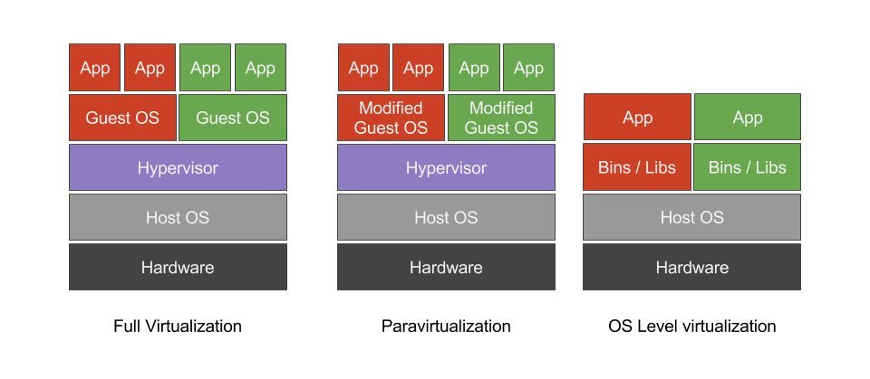

# Srodowiska i narzedzia wytwarzania oprogramowania - wyklad 5 <!--<img src="./Container-Devops-Pipeline.png" width="800">--> <!--http://developers.redhat.com/blog/2016/09/14/microservices-cicd-pipelines-in-openshift/--> <img src="./VB-logo.png" width="160"> <img src="./Vagrant-logo.png" width="150"> <img src="./LXC-logo.png" width="200"> <img src="./Docker-logo.png" width="200"> --- ### Wirtualizacja/izolacja srodowiska wytwarzania oprogramowania - wirtualizacja jest podstawa obliczen w chmurze (cloud computing) - wirtualizacja - VirtualBox & Vagrant, VMWare, Hyper-V,... - KVM/QEMU - Xen - ProxMox,... - izolacja srodowiska wytwarzania oprogramowania - kontenery, LXC - Docker --- ### Typy wirtualizacji - hypervisor & guest OS - hypervisor allows a physical host's resources to be abstracted and shared among virtual machines - typy wirtualizacji - full virtualization type I ('bare-metal') e.g. VMWare VSPhere, Citrix XenServer, RHEV,... - full virtualization type II ('hosted') e.g. VirtualBox, KVM,... - paravirtualization e.g. Xen - OS-level virtualization e.g. LXC, jails, zones - wada wirtualizacji: narzut zwiazany z utrzymaniem calego systemu operacyjnego goscia --- ### Typy wirtualizacji  --- ### Typy wirtualizacji --- ### Pelna wirtualizacja typ II <img src="./hypervisor-type-2.png" width="550"> --- ### Najprostsze rozwiazanie: VirtualBox i Vagrant - VirtualBox, opensource, cross-platform,... - Vagrant (meta-manager maszyn wirtualnych) - domyslnie polaczony z instalacja VirtualBoxa - w nazewnictwie Vagranta VM = box - dostepne sa wtyczki dla libvirt, KVM, LXC, VMWare, ... - ustawienia VM sa definiowane w pliku tekstowym (Vagrantfile)! - bardzo duza baza dostepnych boxow bazowych - [vagrantbox.es](http://www.vagrantbox.es) - [atlas.hashicorp.com](https://atlas.hashicorp.com/boxes/search) --- ### Jak uzywac Vagranta? - instalacja ```bash sudo apt-get install virtualbox sudo apt-get install vagrant sudo apt-get install virtualbox-dkms ``` - pobranie obrazu VM ```bash mkdir ~/vagrant/test1 vagrant init hashicorp/precise64 vagrant up Bringing machine 'default' up with 'virtualbox' provider... ==> default: Box 'hashicorp/precise64' could not be found. Attempting to find and install... default: Box Provider: virtualbox default: Box Version: >= 0 ==> default: Loading metadata for box 'hashicorp/precise64' default: URL: https://atlas.hashicorp.com/hashicorp/precise64 ==> default: Adding box 'hashicorp/precise64' (v1.1.0) for provider: virtualbox default: Downloading: https://atlas.hashicorp.com/hashicorp/boxes/precise64/versions/1.1.0/providers/virtualbox.box ==> default: Successfully added box 'hashicorp/precise64' (v1.1.0) for 'virtualbox'! ==> default: Importing base box 'hashicorp/precise64'... ==> default: Matching MAC address for NAT networking... ==> default: Checking if box 'hashicorp/precise64' is up to date... ==> default: Setting the name of the VM: test1_default_1479680106668_82337 ``` --- ```bash ==> default: Clearing any previously set network interfaces... ==> default: Preparing network interfaces based on configuration... default: Adapter 1: nat ==> default: Forwarding ports... default: 22 (guest) => 2222 (host) (adapter 1) ==> default: Booting VM... ==> default: Waiting for machine to boot. This may take a few minutes... default: SSH address: 127.0.0.1:2222 default: SSH username: vagrant default: SSH auth method: private key default: default: Vagrant insecure key detected. Vagrant will automatically replace default: this with a newly generated keypair for better security. default: default: Inserting generated public key within guest... default: Removing insecure key from the guest if it's present... default: Key inserted! Disconnecting and reconnecting using new SSH key... ==> default: Machine booted and ready! ==> default: Checking for guest additions in VM... default: The guest additions on this VM do not match the installed version of default: VirtualBox! In most cases this is fine, but in rare cases it can default: prevent things such as shared folders from working properly. If you see default: shared folder errors, please make sure the guest additions within the default: virtual machine match the version of VirtualBox you have installed on default: your host and reload your VM. default: default: Guest Additions Version: 4.2.0 default: VirtualBox Version: 5.1 ==> default: Mounting shared folders... default: /vagrant => /Users/tjel/vagrant/test1 ``` --- - vNIC hosta ```bash ifconfig vboxnet0: flags=8843<UP,BROADCAST,RUNNING,SIMPLEX,MULTICAST> mtu 1500 ether 0a:00:27:00:00:00 inet 192.168.56.1 netmask 0xffffff00 broadcast 192.168.56.255 ``` - polaczenie przez `ssh` z VM ```bash vagrant ssh Welcome to Ubuntu 12.04 LTS (GNU/Linux 3.2.0-23-generic x86_64) * Documentation: https://help.ubuntu.com/ Welcome to your Vagrant-built virtual machine. Last login: Fri Sep 14 06:23:18 2012 from 10.0.2.2 vagrant@precise64:~$ ifconfig eth0 Link encap:Ethernet HWaddr 08:00:27:88:0c:a6 inet addr:10.0.2.15 Bcast:10.0.2.255 Mask:255.255.255.0 inet6 addr: fe80::a00:27ff:fe88:ca6/64 Scope:Link UP BROADCAST RUNNING MULTICAST MTU:1500 Metric:1 RX packets:629 errors:0 dropped:0 overruns:0 frame:0 TX packets:464 errors:0 dropped:0 overruns:0 carrier:0 collisions:0 txqueuelen:1000 RX bytes:73895 (73.8 KB) TX bytes:59292 (59.2 KB) ``` --- - dostepne opcje ```bash vagrant list-commands Below is a listing of all available Vagrant commands and a brief description of what they do. box manages boxes: installation, removal, etc. cap checks and executes capability connect connect to a remotely shared Vagrant environment destroy stops and deletes all traces of the vagrant machine docker-exec attach to an already-running docker container docker-logs outputs the logs from the Docker container docker-run run a one-off command in the context of a container global-status outputs status Vagrant environments for this user halt stops the vagrant machine help shows the help for a subcommand init initializes a new Vagrant environment by creating a Vagrantfile list-commands outputs all available Vagrant subcommands, even non-primary ones login log in to HashiCorp's Atlas package packages a running vagrant environment into a box plugin manages plugins: install, uninstall, update, etc. port displays information about guest port mappings powershell connects to machine via powershell remoting provider show provider for this environment provision provisions the vagrant machine push deploys code in this environment to a configured destination rdp connects to machine via RDP reload restarts vagrant machine, loads new Vagrantfile configuration resume resume a suspended vagrant machine rsync syncs rsync synced folders to remote machine ... ``` --- - wylaczanie VM ```bash vagrant suspend vagrant halt vagrant destroy ``` - dodawanie VM z [atlasu HashiCorp](https://atlas.hashicorp.com/boxes/search) ```bash vagrant box add ubuntu/trusty64 ``` - VM sa skladowane w katalogu `~/.vagrant.d/boxes` ```bash ls -a ~/.vagrant.d/boxes . hashicorp-VAGRANTSLASH-precise64 .. ubuntu-VAGRANTSLASH-trusty64 ``` - lista pobranych VM ```bash vagrant box list hashicorp/precise64 (virtualbox, 1.1.0) ubuntu/trusty64 (virtualbox, 20161111.0.0) ``` --- ### Vagrantfile - podstawowa konfiguracja ```bash # -*- mode: ruby -*- # vi: set ft=ruby : Vagrant.configure("2") do |config| config.vm.box = "hashicorp/precise64" config.vm.box_url = "http://files.vagrantup.com/precise64.box" end ``` - zarzadzanie konfiguracja ```bash # Enable provisioning with a shell script. Additional provisioners such as # Puppet, Chef, Ansible, Salt, and Docker are also available. Please see the # documentation for more information about their specific syntax and use. # config.vm.provision "shell", inline: <<-SHELL # apt-get update # apt-get install -y apache2 # SHELL ``` --- ### Vagrantfile ```bash Vagrant.configure("2") do |config| config.vm.provision "shell", inline: "echo Hello, World" end ``` ```bash vagrant up Bringing machine 'default' up with 'virtualbox' provider... ==> default: Importing base box 'hashicorp/precise64'... ... default: VirtualBox Version: 5.1 ==> default: Mounting shared folders... default: /vagrant => /Users/tjel/vagrant/test1 ==> default: Running provisioner: shell... default: Running: inline script ==> default: stdin: is not a tty ==> default: Hello, World ``` --- ### Bardziej wyrafinowane rozwiazanie: KVM i jego zalety - Kernel-Based Virtual Machine, ~2007, Linux kernel >= 2.6.20 - 'KVM converts the Linux kernel into a bare metal hypervisor' - 60-90% less expensive with the same core functionality - KVM is able to utilize the advanced security capabilities of SELinux. This enables KVM to provide Mandatory Access Control security between virtual machines. - In KVM mode a VM is no different than any other program running on Linux. So administrators can set defined thresholds for CPU, memory, network, and disk I/O, guaranteeing the QoS for given VMs. - KVM’s open source architecture --- ### Jak dziala KVM? - supported hardware: any i386/x86_64 CPU that have AMD-V or VT-x - supported OSes: Linux, BSD, Solaris, Windows - implemented as kernel modules - kvm.mo: provides virtualization infrastructure - kvm_amd.ko and kvm_intell.ko: hardware platform specific modules for the hardware virtualization technologies - KVM virtual machines become regular user-space processes - KVM/QEMU - QEMU emulates PC hardware and CPUs - communicates with KVM via /dev/kvm - KVM user interfaces - CLI virsh - GUI virt-manager - API libvirt - virt-goodies convert the config file of VMWare to libvirt xml --- <img src="./KVM-1.jpg" width="800"> --- ### Ograniczenia KVM-a - guest RAM size: 512 GB - virtual CPUs per guest: 16 - NICs per guest: 8 - block devices per guest: 4 emulated, 20 para-virtual (virtio-blk) - maximum number of guests: # vCPUs <= 8 x # host CPU cores --- ### Jak uzywac KVM? - sprawdzenie czy KVM jest obslugiwany + wlaczenie obslugi wirtualizacji w BIOS-ie ```bash egrep '(vmx|svm)' /proc/cpuinfo ``` - instalacja pakietow KVM ```bash sudo apt-get install qemu-kvm libvirt-bin ubuntu-vm-builder bridge-utils ``` - dodanie uzytkownikow do grupy libvirtd ```bash sudo adduser <user> libvirtd ``` - sprawdzenie poprawnosci instalacji ```bash sudo virsh -c qemu:///system list > Id Name State > ---------------------------------------------------- > ``` --- ### Domyslne ustawienia sieciowe KVM - siec prywatna `192.168.122.0/24` z serwerem DHCP - adres IP wirtualnego interfejsu virbr0 hosta 192.168.122.1 ```bash ifconfig -a virbr0 Link encap:Ethernet HWaddr 11:11:11:11:11:11 inet addr:192.168.122.1 Bcast:192.168.122.255 Mask:255.255.255.0 UP BROADCAST MULTICAST MTU:1500 Metric:1 RX packets:0 errors:0 dropped:0 overruns:0 frame:0 TX packets:0 errors:0 dropped:0 overruns:0 carrier:0 collisions:0 txqueuelen:0 RX bytes:0 (0.0 B) TX bytes:0 (0.0 B) ``` ```bash ping 192.168.122.1 PING 192.168.122.1 (192.168.122.1) 56(84) bytes of data. 64 bytes from 192.168.122.1: icmp_seq=1 ttl=64 time=0.040 ms 64 bytes from 192.168.122.1: icmp_seq=2 ttl=64 time=0.042 ms 64 bytes from 192.168.122.1: icmp_seq=3 ttl=64 time=0.040 ms ``` - VM komunikuja sie ze swiatem zewnetrznym poprzez NAT - aby VM byly widoczne z zewnatrz trzeba zmostkowac `eth0` --- ### Mostkowanie `eth0` z dynamicznym IP ```bash cat /etc/network/interfaces auto eth0 iface eth0 inet manual auto br0 iface br0 inet dhcp bridge_ports eth0 bridge_fd 9 bridge_hello 2 bridge_maxage 12 bridge_stp off ``` ```bash sudo /etc/init.d/networking restart ``` --- ### Mostkowanie `eth0` ze statycznym IP 192.168.0.5 ```bash cat /etc/network/interfaces auto eth0 iface eth0 inet manual auto br0 iface br0 inet static address 192.168.0.5 network 192.168.0.0 netmask 255.255.255.0 broadcast 192.168.0.255 gateway 192.168.0.1 bridge_ports eth0 bridge_fd 9 bridge_hello 2 bridge_maxage 12 bridge_stp off ``` ```bash sudo /etc/init.d/networking restart ``` ```bash ifconfig br0 Link encap:Ethernet HWaddr 11:11:11:11:11:11 inet addr:192.168.0.5 Bcast:192.168.0.255 Mask:255.255.255.0 inet6 addr: fe80::217::42ff::fe1f:18be/64 Scope:Link UP BROADCAST MULTICAST MTU:1500 Metric:1 ``` --- ### vmbuilder & JeOS - opcje skryptu vmbuilder ```bash sudo vmbuilder kvm ubuntu --help ``` - utworzenie VM ```bash sudo vmbuilder kvm ubuntu --suite trusty --flavour virtual --hostname test1 \ --libvirt qemu:///system --rootsize=2048 --swapsize=256 --user ubuntu \ --pass niezabezpieczone -d test1-kvm 2016-11-20 21:36:59,788 INFO : logging to file: /tmp/tmpKKMXno 2016-11-20 21:36:59,804 INFO : Calling hook: preflight_check 2016-11-20 21:36:59,806 INFO : Calling hook: set_defaults 2016-11-20 21:36:59,806 INFO : Calling hook: bootstrap ... 2016-11-20 22:30:19,480 INFO Cleaning up ``` ```bash ls test1-kvm run.sh tmpHHSJGz.qcow2 ``` - plik konfiguracyjny XML ```bash /etc/libvirt/qemu ``` --- ### Zarzadzanie VMs za pomoca `virsh` - wyswietlenie wszystkich dzialajacych VM ```bash virsh -c qemu:///system list > Connecting to uri: qemu:///system > Id Name State > ---------------------------------- ``` - uruchomienie VM ```bash virsh -c qemu:///system start test1 Connecting to uri: qemu:///system Domain test1 started ``` ```bash virsh -c qemu:///system list > Connecting to uri: qemu:///system > Id Name State > ---------------------------------- > 9 test1 running ``` --- ### Zarzadzanie VMs za pomoca `virsh` - zamkniecie i 'wyciagniecie wtyczki' VM: ```bash virsh -c qemu:///system shutdown test1 virsh -c qemu:///system destroy test1 ``` - utworzenie migawki i jej przywrocenie ```bash virsh -c qemu:///system save test1 test1-migawka.state virsh -c qemu:///system restore test1 test1-migawka.state ``` - wstrzymanie i wznowienie VM ```bash virsh -c qemu:///system suspend test1 virsh -c qemu:///system resume test1 ``` --- ### Izolacja aplikacji: control groups (cgroups) - any packages or libraries that the task might depend on (a specific version of Python, a working C++ compiler, and so on) must be already present on the host operating system <img src="./VM-cgroups-Docker.png" width="700"> --- ### Izolacja aplikacji: Linux Containers (LXC) - Linux Containers (LXC) is an operating system-level isolation method for running multiple isolated Linux systems (containers) on a single control host (LXC host) - under the hood of Linux kernel (> 2.6.24) since 2007: namespaces, control groups (cgroups), chroot,... - 'container = self-contained running instance that is separate from the host OS, but which can dynamically share resources' - no CPU or hardware virtualization - much lower CPU overhead - much faster file access - sometimes hard to configure networking - tricky to run completely different distro-based containers - for simple networks bridge-mode interface is enough - containers managment/engines: Docker, LXD, rkt,... --- ### Docker <img src="./Docker-logo.png" width="300"> - 'Docker is a container system making use of LXC containers' - The application and all of its dependencies are packaged within the container and deployed atop of host operating system - More lightweight that deploying an entire virtual machine - Next lecture: wlasnosci, why and how to use Docker? <!-- UWAGA: jadro hosta musi pasowac do tego, jakie zawiera gosc-->